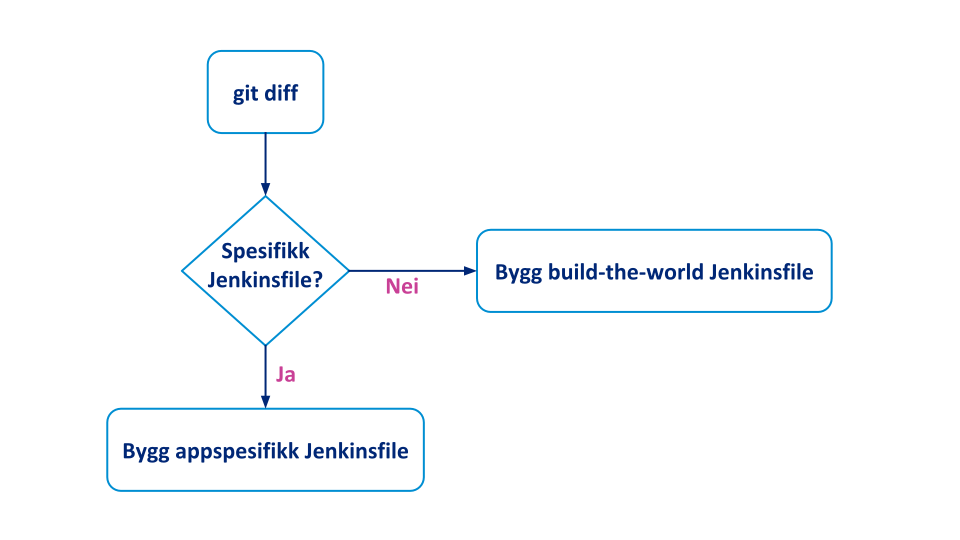
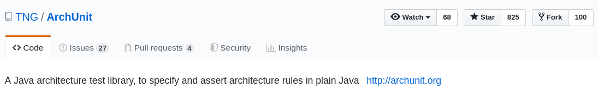
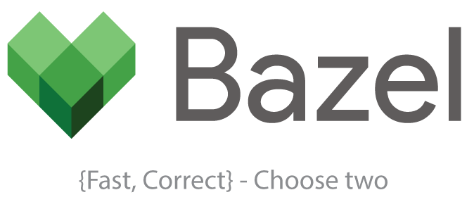

Monorepo
med Git
og Maven
- hvordan lære gamle hunder nye triks
Anders Gjendem, Jonas Nordstrand

- Felleskode
- Møt monorepo
- Fra multi- til monorepo
- Utfordringer
- Positive effekter
De Fem Monorepo-bud
etter Google sitt evangelium
1.
The codebase is contained in a single repo encompassing multiple projects.
2.
The development process is trunkbased; engineers commit to the head of the repo.
3.
Code is viewable and searchable by all engineers in the organization.
4.
Any project in the repo can be built only from dependencies also checked into the repo. Dependencies are unversioned; projects must use whatever version of their dependency is at the repo head.
5.
A shared set of tooling governs how engineers interact with the code, including building, testing, browsing, and reviewing code.
$ tree
.
├── apps
│ ├── app1
│ │ ├── pom.xml
│ │ └── src
│ ├── app2
│ │ ├── pom.xml
│ │ └── src
│ └── pom.xml
├── libs
│ ├── lib1
│ │ ├── pom.xml
│ │ └── src
│ ├── lib2
│ │ ├── pom.xml
│ │ └── src
│ └── pom.xml
├── pom.xml
├── README.md
$ mvn clean install
[INFO] Scanning for projects...
[INFO] ----------------------------------------------------
[INFO] Reactor Build Order:
[INFO]
[INFO] root [pom]
[INFO] libs [pom]
[INFO] lib2 [jar]
[INFO] lib1 [jar]
[INFO] apps [pom]
[INFO] app1 [jar]
[INFO] app2 [jar]
[INFO]
apps/app1 $ mvn clean install
[INFO] Scanning for projects...
[INFO] ----------------------------------------------------
[INFO] Reactor Build Order:
[INFO]
[INFO] app1 [jar]
[INFO]
apps/app1 $ mvn -f ../.. -pl :app1 -am clean install
[INFO] Scanning for projects...
[INFO] ----------------------------------------------------
[INFO] Reactor Build Order:
[INFO]
[INFO] root [pom]
[INFO] libs [pom]
[INFO] lib2 [jar]
[INFO] lib1 [jar]
[INFO] apps [pom]
[INFO] app1 [jar]
[INFO]
filsti == groupId
libs/lib1 ⇒ no.monorepo.libs.lib1
apps/app2 ⇒ no.monorepo.apps.app2
Versjonering i Maven
<project>
<groupId>no.monorepo.libs</groupId>
<artifactId>lib1</artifactId>
<version>1.0.0-SNAPSHOT</version>
CI-vennlig versjonering
<project>
<groupId>no.monorepo.libs</groupId>
<artifactId>lib1</artifactId>
<version>${revision}</version>
<properties>
<revision>1.0-SNAPSHOT</revision>
</properties>
$ mvn -Drevision=$(git rev-parse HEAD) clean install
Flate pom-filer
<dependencies>
<dependency>
<groupId>no.monorepo.libs.lib1</groupId>
<artifactId>lib1</artifactId>
<version>${project.version}</version>
</dependency>
CODEOWNERS
# Default owner
/ @nordstrand
# Code owner for the applications
/apps/app1/ @nordstrand
/apps/app2/ @agjendem

Jenkins(file)
$ git diff --name-only origin/master...HEAD
apps/app2/src/main/java/no/monorepo/app2/App2.java
apps/app2/README.md
Jenkins(file)
partial-build-plugin
Sparse checkouts
.git/info/sparse-checkout
/*
!/apps/*/*
/apps/app1/*
<profile>
<id>app2</id>
<activation>
<file>
<exists>app2/pom.xml</exists>
</file>
</activation>
<modules>
<module>app2</module>
</modules>
</profile>
Stort repository?
- VFS for Git
- Sparse Checkouts
- Large File Storage
Lange byggtider
The race to merge
Monolitt 2.0
Overmodent


Umodent
... men

Versjonering
- $ mvn version:set
- $ mvn release:begin
- <version>
- -SNAPSHOT
- <dependencyManagement>
- Bill-of-Materials (BOM)
- dependency-version-convergence
- NPM semantisk versjonering
- NPM pinning
- NPM lock-filer
Jobbing med felleskode
Hvis du ikke har et monorepo, integrerer du ikke kontinuerlig - i beste fall hyppig!
Second order effects
i SpareBank 1 Utvikling
Googles erfaringer
Advantages and Disadvantages of a Monolithic Repository:
A case study at Google
Ciera Jaspan, Matthew Jorde, Andrea Knight, Caitlin Sadowski, Edward K. Smith, Collin Winter-Google;
Emerson Murphy-Hill NC State University